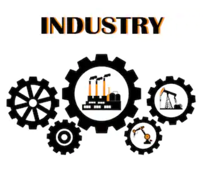
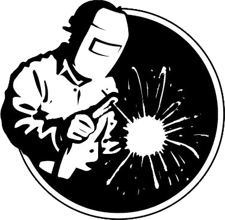
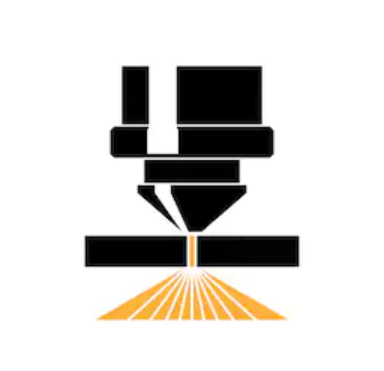

-

WORKING
The utility of Welding and Waterjet cutting encompasses a broad range of applications from industrial to artistic. S&S Welding has welded and fabricated process systems for refineries, power plants, paper mills, chemical facilities, oil and gas well locations, pipelines, compressor stations, drilling rigs, and more. S&S Welding has also Waterjet cut specialty parts from gears and tools to decorative stones and construction composites.
-

WELDING
With mig, tig, and stick Welding capabilities, S&S Welding is perfectly positioned to accomplish any welding task. S&S Welding has repaired industrial aluminum sand haul semi-tankers, built aluminum steps and wind walls for drilling rigs, and repaired aluminum automotive parts as well. S&S Welding has also performed a litany of stainless steel welding from purged process piping to medical grade stainless applications.
-

WATERJET
The Waterjet cutting system is a revolution in fabrication for its ability to cut identical parts in volume like specialty hinges, handles, levers, gears, hand tools, and tank volume testers. S&S Waterjet is capable of cutting thin gauge mild steel and inch thick tool steel without warping or distortion. Home decorators and city planners also love the Watrerjet's ability to carve large stones and various signage.